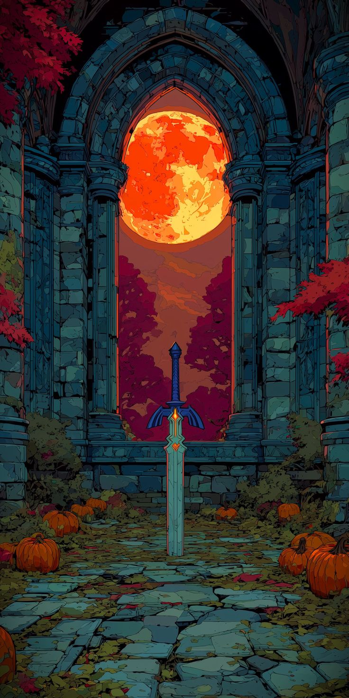

História (totk)
Tears of the Kingdom se passa alguns anos após Breath of the Wild , no final da linha do tempo de Zelda . [ 13 ] Link e Zelda exploram uma caverna sob o Castelo de Hyrule, de onde uma substância venenosa chamada "escuridão" está vazando e causando doenças nas pessoas. Lá, eles encontram murais que retratam a fundação de Hyrule e um conflito subsequente conhecido como a Guerra do Aprisionamento — uma antiga batalha contra um ser chamado de "Rei Demônio" — que Zelda acredita estar relacionado à misteriosa raça Zonai. Ao se aventurarem mais fundo, eles descobrem uma múmia sendo contida por um braço decepado. A múmia desperta e ataca Link e Zelda; como consequência, o braço direito de Link é ferido e a Master Sword é quebrada. O Castelo de Hyrule é erguido para o céu e Zelda cai nas profundezas abaixo; enquanto Link tenta pegá-la, ela desaparece junto com um artefato misterioso. Link é resgatado pelo braço, despertando mais tarde na Grande Ilha do Céu para descobrir que ele substituiu seu membro danificado. Ele encontra o espírito de Rauru, um Zonai e a fonte de seu novo braço, que o ajuda a atravessar a ilha. Assim que Link chega ao seu destino, a Espada Mestra quebrada desaparece e ele retorna à superfície.

História (ocarina of the time)
A história de Ocarina of Time começa na Floresta Kokiri, habitada pelos Kokiri, espíritos guardiões da floresta. Link, um Kokiri, é chamado pela Grande Árvore Deku para derrotar uma força maligna que amaldiçoou a árvore. Após derrotar o monstro Gohma, Link é enviado pela árvore para Hyrule Castelo, onde a Princesa Zelda lhe revela que Ganondorf, um diplomata de Gerudo Deserto, é um homem malvado que busca o poder e a Triforce. Link é enviado em uma jornada para reunir as pedras espirituais que abrirão uma porta no Templo do Tempo, um lugar sagrado que guarda a chave para o plano mestre de Ganondorf. A história é marcada por enredos profundos, personagens memoráveis e uma trilha sonora icônica que se tornou parte da cultura popular.